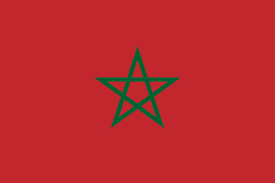

A palavra Marrocos deriva do nome da cidade de Marraquexe, que foi sua capital durante a dinastia almorávida e o Califado Almóada.[13] A origem do nome Marraquexe é contestada,[14] mas provavelmente vem das palavras berbere amur (n) akush ( ⴰⵎⵓⵔ ⵏ ⴰⴽⵓⵛ ), que significa "Terra de Deus".[15] O nome berbere moderno para Marraquexe é "Mṛṛakc" (na escrita berbere latina). Em turco, o Marrocos é conhecido como Fas, um nome derivado de sua antiga capital, Fez. No entanto, em outras partes do mundo islâmico, por exemplo na literatura árabe egípcia e do Oriente Médio, antes de meados do século XX, o nome comumente usado para se referir ao Marrocos era Marraquexe (مراكش).[16]